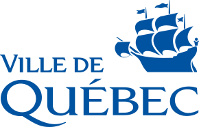
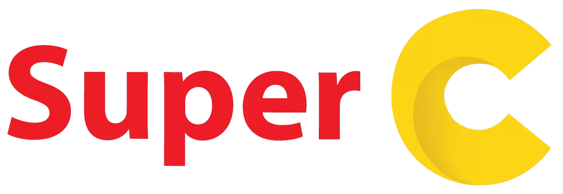
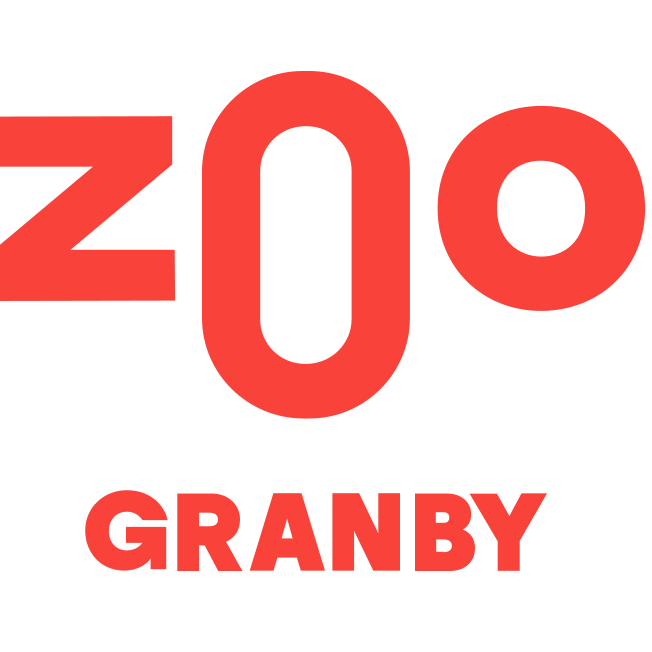

Sept 2025
Mur antibruit écologique à Boucherville
740 m de mur antibruit en saules complétés en bordure du boulevard Industriel — une réponse concrète au bruit routier.
Lire le communiqué →Gestion des eaux, végétalisation, restauration des sols, éco-produits. La puissance des saules, à grande échelle.
Solutions utilisant les saules pour industries à enjeux environnementaux.
Produits écologiques issus de la culture des saules.
Ils nous font confiance



Découvrez les phyto-solutions et éco-produits Ramo adaptés à votre profil.
Nous utilisons les capacités extraordinaires des saules pour développer des solutions environnementales.
~12,8 ha et ~204 800 saules : jusqu'à ~51 000 m³/an de lixiviat traités et ~242 t CO₂ éq./an captées.
Mur Pilebyg® en saules tressés de 350 m × 5 m — atténuation de 5 dBA et 12 433 kg de carbone captés.
13 ha en végétalisation intensive — jusqu'à 268 800 saules plantés et MRF valorisées sur site, depuis 2017.
740 m de mur antibruit en saules complétés en bordure du boulevard Industriel — une réponse concrète au bruit routier.
Lire le communiqué →Déploiement de la technologie Evaplant® pour traiter le lixiviat par évapotranspiration.
Lire le communiqué →WM et Ramo étendent le projet pilote Evaplant® au plus grand LET du Québec — désormais ~12,8 ha et ~204 800 saules.
Lire le communiqué →Radio-Canada présente le partenariat innovant entre Ramo et Sayona en Abitibi pour le traitement des eaux minières.
Lire l'article →Le média climatique québécois analyse comment les saules de Ramo transforment la gestion des eaux dans le secteur minier.
Lire l'article →Portrait de Ramo et de Francis Allard, de la production de biomasse à la création d'un leader en phytotechnologie.
Lire l'article →Tous les communiqués, articles et vidéos de Ramo
Notre équipe vous accompagne — de l'évaluation préliminaire au déploiement.
Nous joindre Rejoindre RamoRejoins une équipe de 75 passionnés qui déploie des solutions basées sur la nature.
Nos offres d'emploi